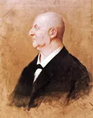

Symphony No. 7, WAB 107
4 recordings · 57 min
In the Hall
- I. Allegro moderatoHochschulsymphonieorchester, University of Music and Theatre Munich; Marcus Bosch, conductor · Munich, 2020 or 8 November 202117:55
A long cello melody rises above trembling violins and travels through the orchestra. In this live Munich performance under Marcus Bosch, Bruckner saves the timpani for the closing pages: one sustained roll beneath an immense E-major farewell.
Notes as it plays · how it is joined
- The cello’s long climb
Cellos and a solo horn rise through E major above trembling violins. Violas join the melody, then a clarinet. The line keeps growing as each new instrument enters; Bruckner lets a single breath of melody occupy almost the whole opening page.
- A candle beside the bed
Bruckner tells Hans Richter that the melody comes to him in a dream. His old mentor Ignaz Dorn plays it on a viola and promises him success. Bruckner wakes, lights a candle and writes the tune down.
- Oboe and clarinet together
Oboe and clarinet begin the second theme, marked Ruhig — calm. Beneath their joined voices, the strings keep separate lines moving. This gentle tune has considerable ingenuity hidden inside it: later, the strings turn its melody upside down.
- A walk in octaves
The violins step forward in octaves while the basses repeat short notes. Bruckner marks the violin line immer hervortretend — always prominent. Its compact phrases give this third theme a brisker gait than the long melodies before it.
- Cellos under held wind notes
The cellos resume the opening figure quietly beneath sustained flute and bassoon notes. Soon clarinet, bassoon and horn take it apart. A melody that began as one enormous line becomes a conversation in smaller phrases.
- The melody falls in canon
The opening melody turns upside down in C minor. Woodwind entries chase one another downwards, while brass and strings strike the chords beneath them. Bruckner restores Tempo I and gives the quiet development an abrupt, formidable interruption.
- The cello meets its reflection
The opening cello tune returns with horn and trumpet. Above it, flute and first violins play its descending reflection. Two shapes of the same melody fit together, one climbing as the other falls.
- Nikisch brings it to Leipzig
On 30 December 1884, Arthur Nikisch conducts the premiere with the Gewandhaus Orchestra in Leipzig’s Neues Theater. Liszt and excerpts from Wagner’s Götterdämmerung share the programme. At sixty, Bruckner has the great public success his symphonies have long been denied.
- The timpani finally enter
The timpani begin a soft roll on E. They have been silent throughout the movement. Double basses hold the same note while clarinets, oboe and flute climb above them; Bruckner marks the passage sehr feierlich — very solemn.
- One chord, more and more players
E major holds beneath flowing violin figures and broad wind phrases. Trombones, tuba and timpani sustain the bass while the other instruments join the climb. The instruction begins “very calm”, then asks for a little more speed, gradually.
How it is joined
- Oboe and clarinet take over
The first great crescendo subsides into quiet strings. At B, marked Ruhig, oboe and clarinet begin the new tune together. Horn and trumpet supply soft held notes while the violins and violas weave shorter phrases beneath the wind melody.
- The violins take a brisker step
Flowing woodwind figures lead to the third theme. The violins begin it in octaves, marked immer hervortretend, above repeated bass notes and sustained lower-string chords. A soft horn note bridges the entrance; the winds return as the string phrase grows.
- The strings leave the winds alone
The orchestra’s forceful closing phrases dwindle to quiet strings. At H, Ruhig, the strings stop altogether. Flute, oboe and clarinet trade phrases above soft horn and trombone notes, leaving the double basses silent too.
- Cellos return beneath held winds
The woodwind passage slows under a ritardando. At I, a tempo, the cellos begin a rising figure beneath sustained flute and bassoon notes. Violas and basses return with held notes, followed by quiet violin chords and an oboe phrase.
- Flute and basses divide the phrase
The brass crescendo gives way to exchanges among flute and strings. At L, marked Ruhig, the flute plays a short, detached phrase while cellos and basses begin a continuous line below it. Violins answer, then clarinet joins the exchange.
- A descending theme strikes in C minor
Soft flute phrases and held strings lead directly into M, Tempo I. The woodwinds begin the opening theme upside down in C minor, with bassoons following in canon. Horns, trumpets and low brass add emphatic rhythms against the strings’ heavy chords.
- Oboe and clarinet emerge from the brass
The C-minor tutti ends. At N, oboe, clarinet and bassoon resume softly with horn and strings; trumpets and low brass stop. These interwoven phrases carry the music through D and E♭ towards the returning E-major melody.
- The cello tune returns beneath its inversion
At O, the cellos bring back the E-major opening tune, joined by horn and then trumpet. Flute and first violins descend above it with the tune’s inversion. Second violins and violas provide quiet tremolo chords; the basses remain silent.
- Short wind phrases replace the broad chords
The broad orchestral phrases give way to T, Ruhig. Flutes and oboes place short phrases above a moving clarinet line. Strings answer and overlap them, with a soft horn joining between entries. The repeated calm marking recalls the exposition’s wind-led close.
- A soft drum roll on E
After the recapitulation’s closing climax, W begins sehr feierlich. The timpani enter for the first time, rolling softly on E above a held double-bass E. Clarinet starts the rising wind line; cellos and violas move beneath it while violins hold quiet chords.
- II. Adagio — Sehr feierlich und sehr langsamHochschulsymphonieorchester, University of Music and Theatre Munich; Marcus Bosch, conductor · Munich, 2020 or 8 November 202117:56
Four Wagner tubas give this Adagio its grave, close-knit opening sound. Bruckner carries their C♯-minor melody towards a blazing C-major climax, then lets the violins and low brass find a quiet ending.
Notes as it plays · how it is joined
- Five low brass voices
Four Wagner tubas and a contrabass tuba begin in C♯ minor, doubled by violas, cellos and basses. The melody rises, hesitates and falls back. The violins wait through its four-bar phrase before answering.
- Violins on the G string
The violins answer on their lowest string. Bruckner keeps them on the G string as the melody climbs, giving the phrase a strong, dark sound. Their five-bar answer extends the four-bar opening by one slow, extra breath.
- Three beats in F♯ major
The strings begin a warmer tune in F♯ major. Moderato gives it three beats to a bar, and the violins’ running notes keep it buoyant. Low strings pluck the bass while clarinet and bassoon add soft phrases.
- The tubas find another companion
The Wagner tubas bring back the C♯-minor opening. This time the first violins have a line of their own above it, while violas and cellos double the brass melody. The familiar tune acquires another voice without surrendering its slow tread.
- The lighter tune climbs a tone
The three-beat tune returns in A♭ major, a whole tone above its first appearance. Flutes and oboes join the violins’ melody; bassoons and inner strings keep other lines moving. The plucked bass is back too.
- Even violins above swelling tubas
The tuba theme returns for the third time. Above it, first violins trace a continuous chain of arpeggios. Bruckner asks the violins to keep an even strength, without swelling, while the tubas and lower strings shape the melody beneath them.
- January sketch, April score
Bruckner finishes the Adagio’s sketch on 11 January 1883. Wagner dies in Venice on 13 February. By 21 April, Bruckner has completed the orchestral score: the movement he began while Wagner was alive now ends as a farewell to him.
- C major above running violins
The long climb reaches C major. Winds and brass stretch their melody across the bar while both violin sections keep running through rising and falling figures. The music has reached its grandest chord, yet the strings still have somewhere to go.
- An orchestra plays after midnight
After the Munich premiere in March 1885, Hermann Levi takes Bruckner to Die Walküre. When the audience has gone, the orchestra stays. Around midnight, Levi has the musicians play the Adagio’s funeral music for Bruckner alone in the empty theatre.
- A final chorale in C♯
The low brass hold a quiet C♯-major chorale. Horns recall a fragment of the opening melody above it. Strings sustain the harmony, then pluck the last chords; the melody that once occupied a whole paragraph is reduced to a few notes.
How it is joined
- Clarinet descends into quiet brass
The first orchestral crescendo ends, leaving the strings silent. At C, two clarinets descend together above held horn and trumpet notes. Wagner tubas and contrabass tuba then take over in quiet chords, preparing the string melody to follow.
- Strings begin three beats in F♯
The low brass diminish and stop. At D, Moderato, the metre changes from 4/4 to 3/4 and the strings introduce the F♯-major melody. Violins and violas move in flowing figures over a plucked bass; clarinet and bassoon enter as the phrase continues.
- The slow tuba melody returns
The string tune slows and diminishes. At G, Tempo I restores four beats and the opening C♯-minor melody in Wagner tubas, violas and cellos. First violins continue with a new line above it; horns and trumpets enter as the theme unfolds.
- The three-beat tune returns in A♭
The G-major orchestral passage slows and subsides into a short wind phrase. P restores Moderato and 3/4. The earlier F♯-major tune now begins in A♭, with flute and oboe joining the violins above bassoon figures, moving inner strings and plucked basses.
- Steady arpeggios accompany the tubas
The string phrases become quieter and slower. At S, Tempo I, sehr langsam, the Wagner tubas restore the C♯-minor theme over held bass notes. First violins begin even arpeggios: their instruction forbids swelling, while the tubas and low strings have their own crescendo.
- Running violins carry the climb into C
The violin figures climb through the long crescendo while winds and brass broaden the melody. At W they reach C major together, supported by low C in the bass. Both violin sections continue their fast rising and falling figures beneath the sustained upper voices.
- Plucked violins clear the way for tubas
The broad C-major climax diminishes. The violins change their running figures to pizzicato as the brass stop. After a short woodwind phrase, the strings also fall silent; at X the Wagner tubas and contrabass tuba begin their quiet, close-knit phrases alone.
- Violins answer the horn’s last phrase
Horns rise above the tuba chords with an expressive phrase, then diminish to pianissimo. At Y, the first violins answer quietly. Violas and plucked low strings join them, followed by flute; the broad brass chords give way to individual string and wind lines.
- III. Scherzo — Sehr schnell; Trio — Etwas langsamerHochschulsymphonieorchester, University of Music and Theatre Munich; Marcus Bosch, conductor · Munich, 2020 or 8 November 20218:55
A trumpet call cuts across the strings’ restless A-minor figure. Between the scherzo’s two fast spans, Bruckner gives the violins a broad F-major tune — with the trumpet’s rhythm still quietly haunting it.
Notes as it plays · how it is joined
- A trumpet above busy strings
The strings repeat a compact A-minor figure. After four bars, a solo trumpet enters with an octave leap and a sharply pointed rhythm; clarinet answers. The string figure keeps going underneath, ready to carry the call into the whole orchestra.
- The same notes, turned over
The strings resume quietly and the winds answer in longer phrases. Bruckner turns the short figures upside down and passes them between high and low instruments. The tiny scraps that fed the opening uproar now sustain an intricate, softer conversation.
- A drumbeat before the violin song
Soft timpani introduce the trio. First violins begin a long F-major melody, marked gesangvoll — songful — over a held bass. The tempo is slower, but the trumpet’s pointed rhythm returns among these gentler phrases.
- Fire across the street
On 8 December 1881, Vienna’s Ringtheater burns across the street from Bruckner’s home. Afraid the fire will spread, he gathers his manuscripts. The following day he sees the bodies of victims being carried away. He describes the disaster in a letter to his brother-in-law.
- The fast strings start again
The trio ends in F major. After the pause, the quick A-minor string figure returns, followed by the trumpet call. Bruckner asks for the whole scherzo again: its quiet wind exchanges and great brass entries belong to the return as surely as the opening tune.
- Leipzig welcomes the Seventh
Arthur Nikisch conducts the Seventh’s premiere in Leipzig on 30 December 1884. Bruckner is sixty. After years of bruising receptions for his symphonies, this performance with the Gewandhaus Orchestra gives him a public triumph.
- The short figure fills the orchestra
The strings’ repeated figure gathers woodwind and brass around it. Trumpets press the opening rhythm forward, and trombones, tuba and timpani reinforce the final climb. The scherzo ends in A minor with the whole orchestra striking together.
How it is joined
- A soft drumbeat opens the trio
The scherzo closes with the full orchestra in A minor. After the rests, the timpani begin alone and quietly at the slower Etwas langsamer. First violins enter with the F-major trio melody, marked gesangvoll, over sustained inner strings, moving cellos and a held F in the basses.
- F major rests; A minor restarts
Flute, oboe and clarinet finish the trio above held F-major strings, with the horn quietly recalling the scherzo’s rhythm. The phrase dwindles to pianissimo and stops. Scherzo Da Capo restores the fast A-minor string figure, then the solo trumpet’s octave call.
- IV. Finale — Bewegt, doch nicht schnellHochschulsymphonieorchester, University of Music and Theatre Munich; Marcus Bosch, conductor · Munich, 2020 or 8 November 202112:34
The finale turns the symphony’s long opening melody into a nimble violin tune with sharply dotted rhythms. Three very different themes return in reverse order before the horns recover the first movement’s broad E-major melody.
Notes as it plays · how it is joined
- A new gait for old notes
First violins give the symphony’s opening notes a quick, double-dotted rhythm. Second violins tremble underneath; cellos and basses take up the tune next. The first movement’s enormous melody has acquired short steps and a spring in its heels.
- A chorale on plucked basses
The violins settle into long, quiet notes in A♭ major. Violas add an answering line; cellos and basses pluck a bass that moves by semitones. The chorale seems still at first, but those moving lower voices keep changing the colour of its chords.
- The last page in September
Bruckner finishes the finale’s sketch on 10 August 1883 and its orchestral score on 5 September. Nearly two years separate that last page from the first, dated 23 September 1881 at St Florian.
- One melody across the orchestra
Strings, woodwinds and brass stride together through the third theme in A minor. Octave doublings give it a blunt, muscular sound. The strings are told to bow strongly throughout; schwer asks for weight on the falling phrase.
- The strings leave a wind conversation
The strings stop. Flute, oboe and clarinet pass a quiet phrase down through the woodwind, then Wagner tubas answer. A few soft timpani notes on C remain from the preceding passage before the drum also falls silent.
- The chorale comes back quietly
The orchestra stops on a held note. Violins begin the chorale again over plucked cellos and basses; oboe, clarinet and horn join its long phrases. The third theme has returned before the second. Bruckner is bringing the themes home in reverse order.
- Nikisch at the second piano
Arthur Nikisch plays through the new symphony on two pianos with Bruckner’s pupil Josef Schalk. He decides to conduct it with the Gewandhaus Orchestra. On 30 December 1884, that private encounter becomes the Seventh’s Leipzig premiere.
- Horns above a rolling E
A quiet timpani roll on E begins beneath repeated string chords. Horns enter in pairs with the dotted tune; trumpets follow, then the woodwinds sustain the harmony above them. Each new voice adds to the crescendo without disturbing the bass note.
- The first melody stands revealed
The horns stretch the dotted tune back into the symphony’s broad opening melody. Trumpets and clarinets answer with its descending shape while the violins continue their quick figures. E major holds beneath them all, with the timpani rolling to the last chord.
How it is joined
- The dotted tune gives way to long notes
Horn chords and the last violin figures diminish. At rehearsal C, the pace broadens and violins begin the A♭-major chorale in long notes. Violas answer beneath them while cellos and basses pluck a chromatically moving bass. Wagner tubas enter as the phrase continues.
- The strings summon the orchestra in octaves
The quiet string phrases gain weight through a crescendo. At F, winds, brass and strings begin the third theme together in A minor, doubled across several octaves. Repeated accents and the marking schwer give its falling notes a heavy tread.
- Timpani linger as the strings stop
The string figures diminish and stop, leaving a few soft timpani notes on C. Flute begins a phrase which passes to oboe and clarinet; the Wagner tubas answer. The drum drops out too, leaving the winds and brass to continue alone through Ruhig and the following a tempo.
- The dotted figures gather brass and strings
The short dotted figures gather strength through the orchestra. Winds and brass carry emphatic, separately marked notes against the running strings. The passage expands towards Q, Breit und wuchtig — broad and weighty — followed by immer breiter, broader still.
- A held note opens onto quiet strings
The whole orchestra converges on a held note with a pause. At S, Tempo I, strings begin the chorale softly over plucked cellos and basses. Oboe enters first, followed by clarinet and horn; trumpets and low brass remain silent.
- Flute and violins rise above the brass
A crescendo in winds and strings reaches V, marked Breit. Flutes and first violins climb in fast figures. Horns, trumpets, trombones and tubas answer with the dotted rhythm, while second violins and violas give the chords a firm repeated pulse.
- The strings restart the dotted figure softly
The orchestral chords slow and diminish. X restores a tempo: first violins, violas and low strings exchange quiet dotted figures above second-violin tremolo. Oboe supplies a longer phrase, then horn and trumpet join the gradual crescendo towards Y.
- The broad chords yield to a drum roll
The full orchestra broadens into accented chords. At Z the brass withdraw, leaving quiet repeated string chords and a timpani roll on E. Tempo I begins very calmly. Horns enter in pairs, then trumpets, as the crescendo gathers above the unchanging bass.